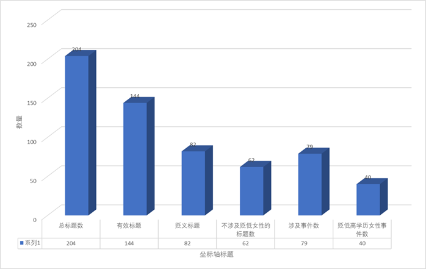
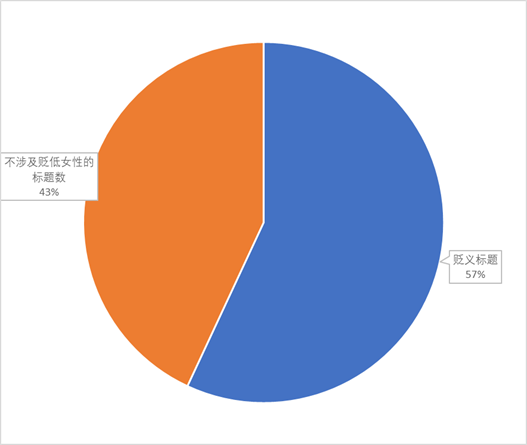
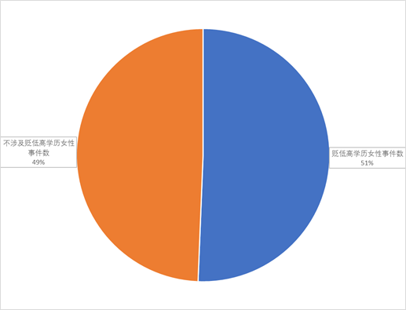

媒体报道中的高学历女性污名化情况
――数据主要来自腾讯网、新浪网、搜狐网近三年的报道

经过对腾讯网，新浪网，搜狐网2015-2017年三年内的新闻标题进行“女博士”“女硕士”“高学历”三个关键词的搜索，我们得到了 204个新闻标题，其中包括网页内循环放出的新闻标题，因此有重复。
去掉重复的新闻标题，我们能够得到144个有效标题，其中有82个标题中含有贬义或者对女性不友好的词汇。

144个标题中，涉及79个事件。其中40个事件是高学历女性处于不利地位的社会问题。

经过对所有标题的分析，可以看出，编辑在编写信息的过程中，总会使用一些词语来夺人眼球。“女博士”这一词汇很大程度上带有了固有的偏见。
以下是我们爬取的数据：
去掉重复的标题：共144个
组图：《大话红娘》来袭 女博士张俪倒追杨烁演恋爱�迨�
非洲女博士谈在华生活:中国的包容让我梦想成真
95后女博士发明癌症检测仪 少量血液即可测癌症
“渐冻症”女博士欲放弃治疗 病友用眼动仪写信鼓励
渐冻症女博士情绪失控:太痛苦不治了 让我捐器官吧
北大患病女博士:求你们拔掉呼吸机
让我捐器官
北大“渐冻”女博士捐器官:曾逼父亲送自己火化
北大“渐冻症”女博士眼球发微信 病情趋于稳定
北大女博士涉论文抄袭学位被撤 告母校终审胜诉
31岁患癌女博士：我写的不是死亡笔记，而是关于生的教训
武汉名校女博士殴打机场工作人员 被拘留10日
女博士误机掌掴工作人员 或无法在国内买机票
法学女博士:为了读博我辞掉工作 如今努力也找不到了
北大女博士患“渐冻症” 医学专家呼吁建罕见病细胞库
视频：歌迷受李宇春歌曲激励 从想辍学到考上哈佛女博士
视频｜北大“渐冻症”女博士留遗嘱捐献器官 女孩最后的愿望让人泪奔
“能救命的部分尽管用！”这个北大女博士最后的愿望让人泪目…
我走之后,头部可用做医学研究...女博士最后的愿望让人泪目
90后女博士挂职副县长 曾是学生干部被报送读博
名校女博士放弃高薪 去山区建造抗震土房
麻省理工女博士的自省：学霸为何不成功
女博士、女强人，相亲角的“低配”
钟秋平：坚守在康复医院的女博士
49岁女博士豪言：MACD的6大选股铁律，一旦掌握，股市就是提款机
北大“渐冻症”女博士能用眼球发微信了！她说，谢谢你们
“渐冻症”北大女博士期待奇迹发生
女博士生发现4种新品种青蛙
或将影响蛙类保护
女博士掌掴机场员工续:已被法航全球拒载属误传
武汉名校女博士晚到误机，大闹机场掌掴女员工被拘
1日，武汉某名校在读女博士张某欲乘机飞往巴黎
1日，武汉某名校女博士张某欲乘机飞往巴黎，因迟到误机
武汉某名牌大学在读女博士张某因迟到误机，掌掴机场工作人员
昨天上午，武汉一高校在读女博士张某欲乘机飞往巴黎
6月1日上午，武汉某名牌大学在读女博士出国参加重要会议
现场：名校女博士机场掌掴工作人员 还理直气壮
这两天，武汉某高校女博士机场打人事件引发热议
渐冻症女博士口述遗嘱捐献遗体
雨＋雾＋降温！ | 女博士被人一掌推下几十级台阶，推人小伙竟是为了……
90后女博士 挂职为何惹争议
组图：泰国女博士当老师走红 遭学生围堵拍照
北大渐冻症女博士留遗嘱捐遗体 母亲:女儿是榜样
北大女博士抄袭被撤学位 告母校胜诉
女博士因吃面时多看男子一眼 遭对方玻璃瓶砸头
村里来了第一书记，是个女博士！
人物 | 厉害了！95后女博士率团突破滴血验癌难关，12项检测结果立等可取
昆明相亲鄙视链：不要160cm以下的女生，不要外地的，不要女博士......那要什么？
【关注】名校女博士被法航禁飞或上中国民航黑名单，网友为啥都叫好？
武汉名校女博士掌掴值机员
法航“拉黑”女博士，且慢叫好！
【关注】机场打人女博士可能要上的“民航黑名单”，有啥来头？
女博士误机打人被列入“黑名单”
被法航列入黑名单后，机场打人女博士会被中国民航“拉黑”吗？
女博士被法航列入黑名单引关注 民航黑名单影响有多大
女博士大闹机场，该被继续加惩吗
留美女博士用身体为导师挡刀 获评“中国好人”
误机打人的女博士或被列入“民航黑名单”
名校女博士大闹机场被拘10日
冲动的代价：女博士被法航列入黑名单（图）
留美女博士替导师挡刀被刺重伤 目前已出院
媒体:女博士杀人分尸获死缓 谨防“花钱买命”
不执著于不完美 感恩所拥有――记高位截肢的浙江大学女博士生叶沈俏
山东高速一工作人员被控玩弄女博士感情
吉大女博士在毕业典礼被成功求婚 校长等见证
女博士在京辛酸买房记：同学想读博吗？先买个房吧
名校女博士机场掌掴女值机员被拘留
《谜巢》李冰冰造型曝光 女博士探秘帝陵
《大话红娘》接地气 叛逆女博士追爱
斯坦福的中国女博士：我们为什么要读博？
北大女博士论文被指抄袭 学位被撤销后起诉学校
监拍女博士因多看男子一眼 遭对方玻璃瓶砸头
女博士成恋爱高手 95后初次性行为平均为17岁
女博士被撤学位起诉北大 法院：校方撤回决定
女博士研究“小姐”10年:你以为她们最在乎钱？
万名大学生说新疆 | 北大维吾尔族女博士8000字求学自述，读完令人深思！
1/4女博士每月美容花销在3000元以上
让"光明"的梦想落地生根：80后女博士的创业路
北大女博士偷共享单车 ofo：怀疑偷车真实性
留美女博士见义勇为替导师挡刀 身上多处被刺伤
“海归”女博士卖食用菌：带领乡亲脱贫致富
在京女博士生活感叹：难道30岁还要住宿舍
女博士因误机打人 被拘10天 或被民航拒载
台湾一女博士生游日本车祸身亡
河北崇礼三天两起滑雪事故 北大女博士和一十岁男童身亡
《一站到底》重庆女博士霸气挑战国际记忆大师 成首位挺进总决赛选手
中国首个聋人女博士 放弃高薪回渝
中国首个聋人女博士 创办西部首家聋人与手语研究中心
女博士被父亲砍死网上流传 调查后系14年前旧案
40岁女博士靠家务健身法逆袭成最美辣妈
女博士成恋爱高手
海南黎锦传承人给博士生当老师 女博士千里来拜师
可怕！女博士因口角勒死男子并肢解抛尸
女博士因琐事杀人并肢解 伙同母亲抛尸
女博士被骗11万 不相信警察一周内破案退款
女博士杀人被判死缓 赔偿死者家属350万获谅解
被导盲犬征服的海归女博士
民国第一女杀手也是中国首位女博士 获罗斯福称赞
女博士在研究生考试中开价6万元替考被抓
女博士郝景芳写《北京折叠》获雨果奖
女博士勒死追求者后抛尸 赔偿家属350万被判死缓
女博士肢解暧昧男 伙同母亲烹尸
女博士杀害“追求者”后抛尸被判死缓
清华女博士写《北京折叠》获雨果奖
日本女博士因学术造假被取消博士学位
女博士涉抄袭被撤销学位 起诉北大要求恢复
贵州大学校长:我们也有27岁女博士评上正教授
北大女博士“博士帽”能否失而复得
河北食品安全校园行：女博士变身“00后”偶像
深圳女博士后 鱼鳞提取胶原蛋白
最牛吃货：女博士8万字论八角对卤鸡肉影响
放弃百万年薪 女博士上辽宁舰当军官
辽宁舰首位女博士军官 是南大美女校友韦慧晓
杭婧：探索生命奥秘的女博士
“留英女博士”帮朋友炒股引发纠纷
女博士侯怀霞的学位论文抄袭过半侵犯了谁？
中科院怀孕女博士猝死医院 单位发函:非施压
张俪饰演女博士
留美女博士被遣返无需过度解读
女博士替考研究生考试被抓 称若顺利通过得6万
英国华裔女博士退出火星殖民计划
英国华裔女博士退出火星殖民计划 曾想当火星产子第一人 - 中文国际 - 中国日报网
台女博士未经许可触摸猕猴被罚5000台币
32岁患癌女博士用生命换来的教训
被撤销学位女博士向北京教委申诉失败
留美女博士被遣返能证明“读书无用”？
留英女博士：如何度过牛津PPE专业魔鬼训练
斯坦福单身女博士涉嫌投毒 或将面临8年刑罚
女硕士吐槽：相亲遇上奇葩男博士，喝了一壶红茶，30多块钱还来和我要！
女硕士吐槽奇葩男博士：相亲不成功还要我退还30多块红茶钱
女硕士相亲遇上奇葩男博士，“喝了一壶红茶，30多块钱还来问我要！”
女硕士欲读博士网购考题 被骗支付5000元解密费
高校评最靓女博士 智美双全就是她们
美女博士弃百万年薪上辽宁舰当军官
《诗书中华》高手齐聚 清华美女博士文理兼修
美女博士百万聘礼招亲 评判标准竟是某枪战游戏
辽宁舰首位美女博士军官：曾放弃高薪工作读研
河海大学票选出“最靓女博士”
清华美女博士回乡村开咖啡馆 圆少女梦
绵竹#清华美女博士卖咖啡# 年画村里喝咖啡，约吗？[围观]
中国医科大女博士赠论文征婚：可改对方为第一作者
浙大泰国籍美女博士夜市摆摊 “黑暗料理”或继续
清华美女博士回乡村开咖啡馆 圆少女梦
“最美女博士”何美丹：用热血标注生命勋章
北大女硕士失踪案20天回顾:车找到人无踪盼平安
其中涉及 个事件，分别是
1.
《大话红娘》来袭 女博士张俪倒追杨烁演恋爱�迨�
2.
非洲女博士谈在华生活:中国的包容让我梦想成真
3.
95后女博士发明癌症检测仪 少量血液即可测癌症
4.
“渐冻症”女博士
5.
北大女博士涉论文抄袭学位被撤 告母校终审胜诉
6.
31岁患癌女博士：我写的不是死亡笔记，而是关于生的教训
7.
武汉名校女博士殴打机场工作人员 被拘留10日
8.
法学女博士:为了读博我辞掉工作 如今努力也找不到了
9.
视频：歌迷受李宇春歌曲激励 从想辍学到考上哈佛女博士
10. 90后女博士挂职副县长
曾是学生干部被报送读博
11. 名校女博士放弃高薪 去山区建造抗震土房
12. 麻省理工女博士的自省：学霸为何不成功
13. 女博士、女强人，相亲角的“低配”
14. 钟秋平：坚守在康复医院的女博士
15. 49岁女博士豪言：MACD的6大选股铁律，一旦掌握，股市就是提款机
16. 女博士生发现4种新品种青蛙 或将影响蛙类保护
17. 6月1日上午，武汉某名牌大学在读女博士出国参加重要会议
18. 雨＋雾＋降温！ | 女博士被人一掌推下几十级台阶，推人小伙竟是为了……
19. 90后女博士 挂职为何惹争议
20. 组图：泰国女博士当老师走红 遭学生围堵拍照
21. 北大女博士抄袭被撤学位 告母校胜诉
22. 女博士因吃面时多看男子一眼 遭对方玻璃瓶砸头
23. 村里来了第一书记，是个女博士！
24.
昆明相亲鄙视链：不要160cm以下的女生，不要外地的，不要女博士......那要什么？
25. 留美女博士用身体为导师挡刀 获评“中国好人”
26. 媒体:女博士杀人分尸获死缓 谨防“花钱买命”
27. 不执著于不完美 感恩所拥有――记高位截肢的浙江大学女博士生叶沈俏
28. 山东高速一工作人员被控玩弄女博士感情
29. 吉大女博士在毕业典礼被成功求婚 校长等见证
30.
女博士在京辛酸买房记：同学想读博吗？先买个房吧
31. 《谜巢》李冰冰造型曝光 女博士探秘帝陵
32.
斯坦福的中国女博士：我们为什么要读博？
33.
监拍女博士因多看男子一眼 遭对方玻璃瓶砸头
34.
女博士成恋爱高手 95后初次性行为平均为17岁
35. 女博士研究“小姐”10年:你以为她们最在乎钱？
36. 万名大学生说新疆 | 北大维吾尔族女博士8000字求学自述，读完令人深思！
37. 1/4女博士每月美容花销在3000元以上
38. 让"光明"的梦想落地生根：80后女博士的创业路
39. 北大女博士偷共享单车 ofo：怀疑偷车真实性
40. “海归”女博士卖食用菌：带领乡亲脱贫致富
41.
在京女博士生活感叹：难道30岁还要住宿舍
42. 台湾一女博士生游日本车祸身亡
43. 河北崇礼三天两起滑雪事故 北大女博士和一十岁男童身亡
44. 《一站到底》重庆女博士霸气挑战国际记忆大师 成首位挺进总决赛选手
45. 中国首个聋人女博士 放弃高薪回渝
46. 女博士被父亲砍死网上流传 调查后系14年前旧案
47. 40岁女博士靠家务健身法逆袭成最美辣妈
48. 海南黎锦传承人给博士生当老师 女博士千里来拜师
49.
女博士因琐事杀人并肢解 伙同母亲抛尸
50. 被导盲犬征服的海归女博士
51. 民国第一女杀手也是中国首位女博士 获罗斯福称赞
52. 女博士在研究生考试中开价6万元替考被抓
53. 女博士郝景芳写《北京折叠》获雨果奖
54.
日本女博士因学术造假被取消博士学位
55. 贵州大学校长:我们也有27岁女博士评上正教授
56. 河北食品安全校园行：女博士变身“00后”偶像
57. 深圳女博士后 鱼鳞提取胶原蛋白
58. 最牛吃货：女博士8万字论八角对卤鸡肉影响
59. 辽宁舰首位女博士军官 是南大美女校友韦慧晓
60. 杭婧：探索生命奥秘的女博士
61.
“留英女博士”帮朋友炒股引发纠纷
62.
女博士侯怀霞的学位论文抄袭过半侵犯了谁？
63. 中科院怀孕女博士猝死医院 单位发函:非施压
64.
留美女博士被遣返无需过度解读
65. 英国华裔女博士退出火星殖民计划
66.
台女博士未经许可触摸猕猴被罚5000台币
67. 留英女博士：如何度过牛津PPE专业魔鬼训练
68.
斯坦福单身女博士涉嫌投毒 或将面临8年刑罚
69.
女硕士吐槽：相亲遇上奇葩男博士，喝了一壶红茶，30多块钱还来和我要！
70. 女硕士欲读博士网购考题 被骗支付5000元解密费
71. 高校评最靓女博士 智美双全就是她们
72. 《诗书中华》高手齐聚 清华美女博士文理兼修
73. 美女博士百万聘礼招亲 评判标准竟是某枪战游戏
74. 河海大学票选出“最靓女博士”
75. 清华美女博士回乡村开咖啡馆 圆少女梦
76. 中国医科大女博士赠论文征婚：可改对方为第一作者
77. 浙大泰国籍美女博士夜市摆摊 “黑暗料理”或继续
78. “最美女博士”何美丹：用热血标注生命勋章
79. 北大女硕士失踪案20天回顾:车找到人无踪盼平安